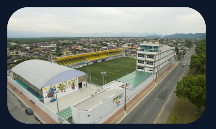
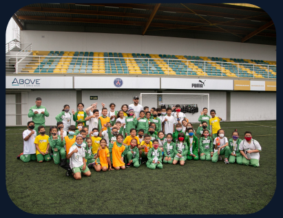
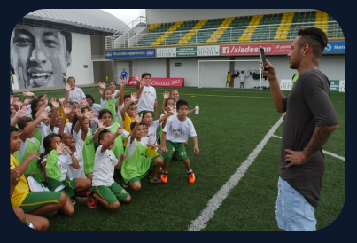

.png)
|
O Instituto Neymar Jr foi fundado em 2010 pelo jogador de futebol brasileiro Neymar Jr, quando
ele ainda jogava no Santos FC.
Na época, Neymar Jr decidiu criar a organização para ajudar crianças e jovens em sua cidade
natal, Praia Grande, no litoral de
São Paulo.
|
 |
atividade Inicialmente, o instituto atendia cerca de 2.000 crianças e adolescentes, oferecendo atividades esportivas, culturais e educacionais. Com o tempo, o instituto cresceu e expandiu suass para outras regiões do Brasil.
|
O Instituto Neymar Jr oferece uma ampla gama de programas e atividades para crianças e jovens em situação de vulnerabilidade social. Esses programas incluem: Esporte: o instituto oferece aulas de futebol, vôlei, basquete, skate e outras atividades esportivas para crianças e jovens. |
 |
Cultura: o instituto promove atividades culturais, como dança, teatro, música e artes plásticas.
Educação: o instituto oferece cursos de línguas, alfabetização, informática e outras áreas do conhecimento para crianças e jovens.
Saúde: o instituto tem um centro médico que oferece atendimento médico e odontológico gratuito para crianças e jovens.
Assistência social: o instituto oferece assistência social para famílias em situação de vulnerabilidade social, incluindo ajuda financeira, alimentos e outros recursos.
|  |
O Instituto Neymar Jr tem como objetivo principal promover a inclusão social e a educação de crianças e jovens em situação de vulnerabilidade social. Alguns dos principais benefícios do instituto são: |
Oportunidades educacionais: o instituto oferece cursos de línguas, alfabetização, informática e outras áreas do conhecimento, ajudando as crianças e jovens a adquirir novas habilidades e conhecimentos. Promoção da saúde: o instituto tem um centro médico que oferece atendimento médico e odontológico gratuito para crianças e jovens, ajudando a promover a saúde e o bem-estar.
Desenvolvimento esportivo: o instituto oferece aulas de esportes, incluindo futebol, vôlei, basquete e skate, ajudando as crianças e jovens a desenvolver habilidades físicas e mentais. Inclusão social: o instituto trabalha para promover a inclusão social e a igualdade de oportunidades para crianças e jovens em situação de vulnerabilidade social.